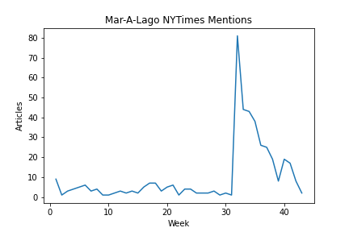

on
Week 7 - 10/26/22 -- Shocks
Intro
Blog Extension: Mar-A-Lago Raid
One major unexpected event of this election cycle was the FBI’s raid on Mar-A-Lago, former President Donald Trump’s persoanl residence, in pursuit of missing highly classified documents. This news story captured the attention of both those on the left and the right, as shown in the number of the number of articles that mention “Mar-A-Lago” in the NYTimes spiking during the week of the raid.

However, it should be noted that we can see that the current level of discussion of Mar-A-Lago has now returned to pre-raid levels, seeming to demostrate that the “shock” has already entirely dissapated. Nevertheless, we can analyze the immediate impact of the raid on the generic polling average:

We notice can notice three possible isnights following the raid:
- In the following week, both D and R support decreased. It is possible that the raid exposed unpopular aspects in each: for Republicans, reinforcing the potentially unlawfulness of their party’s leader, and for Democrats, reinforcing the idea that their actions were politically motivated. However, we see that the dip in R support seems to eb larger than the dip in D support.
- The Democratic support increased in wake of the raid, and the Republican support flatlined. A potential explanation for this is that the raid motivated the democratic base and increased support from their base, but there was no Republican change (because all those who would oppose the party due to Trump had already left).
- Finally, it’s possible that the trend of flipping R and D support that began at approximately week 25 continued through the Mar A Lago raid, subject to regular noise. In this case, the raid did little to change opinions in either party.
Each of these 3 possibilities seems potentially valid based on this (single) data series. Importantly, it shows that the impact of shocks varies widely as you change timeframes of analysism and the degree to which you incprporate other outside information.
Please note, the plots for these were created in cells 72-74 of the python notebook.